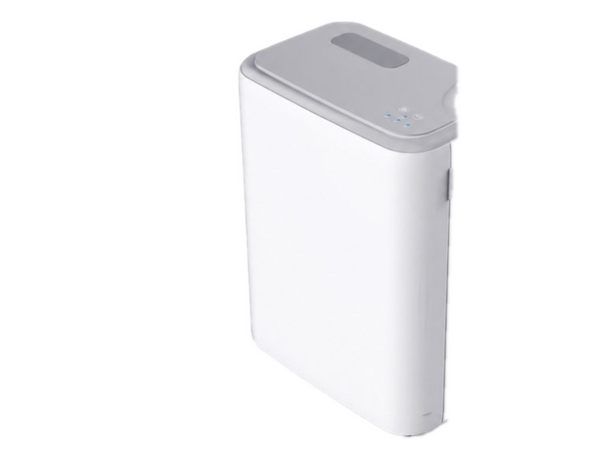

ใต้ซิงก์
ใต้ซิงก์RP-U07
เครื่องกรองน้ำ RO ใต้ซิงก์ 400–600 GPD
SKU: RP-U07
MOQ: ยืนยันเมื่อสอบถาม
หน้าแรก/ผลิตภัณฑ์/ระบบ RO ใต้ซิงก์/ RP-U01

ระบบ RO ใต้ซิงก์
ระบบ RO แบบไส้กรองดึงออกโดยไม่ใช้เครื่องมือ (M2)
RP-U01 — ระบบ RO แบบไส้กรองดึงออกโดยไม่ใช้เครื่องมือ ข้อมูลจำเพาะหลัก: ตัวเลือกความจุ RO 600 / 800 / 1000 GPD ข้อมูลจำเพาะยืนยันตามรุ่นและคำสั่งซื้อ มีรุ่นสีขาวขอบทองแดงด้วย (800–1400 GPD) รวมถึงรุ่น 400–800G; ดูหัวข้อรุ่นย่อยด้านล่าง.
แรงดันไฟฟ้า / ความถี่สามารถปรับตั้งได้ตามประเทศเป้าหมาย การตั้งค่าอื่น ๆ จะยืนยันตามคำสั่งซื้อ.
RP-U01 เป็นระบบ RO ใต้ซิงก์ที่ออกแบบให้เปลี่ยนไส้กรองโดยไม่ใช้เครื่องมือ: ไส้กรองดึงออกจากด้านหน้าโดยไม่ใช้เครื่องมือ การเปลี่ยนไส้กรองจึงไม่ต้องใช้เครื่องมือ มีสามช่วงความจุครอบคลุม 400 ถึง 1400 GPD ทั่วตระกูล และรุ่นหลักทำงานที่ 600 / 800 / 1000 GPD พร้อมอัตราการไหลน้ำบริสุทธิ์ 2.6 L/min รุ่นหลักมีปริมาณน้ำบริสุทธิ์ที่กำหนด 4000 L และมีรุ่นกรอง 6 ขั้นตอน ออกแบบสำหรับเจ้าของแบรนด์ที่ต้องการ RO ใต้ซิงก์ที่ดูแลง่ายหลังการขาย.
ปริมาณสั่งซื้อขั้นต่ำคือเท่าใด?
คำสั่งซื้อครั้งแรกคือ 200 ชิ้น ต่อรุ่น และการสั่งซื้อซ้ำคือ 500 ชิ้น.
สามารถสั่งซื้อตัวอย่างก่อนสั่งซื้อจำนวนมากได้หรือไม่?
ใช่ ตัวอย่างพร้อมภายใน 15 วัน และจะคืนค่าตัวอย่างเมื่อสั่งซื้อจำนวนมากครั้งแรก คำสั่งซื้อจำนวนมากใช้เวลา 40 วันหลังอนุมัติตัวอย่าง และจัดส่ง FOB Shenzhen.
เปลี่ยนไส้กรองอย่างไร?
เปลี่ยนแบบดึงออกโดยไม่ใช้เครื่องมือในรุ่นหลัก; ไส้กรอง RO เปลี่ยนเป็นชิ้นทั้งชิ้นเมื่อหมดอายุ รุ่น 400–800G ใช้การเปลี่ยนไส้กรองแบบสอดด้านข้าง.
สามรุ่น — เสนอราคาเป็น RP-U01 และระบุรุ่น (รุ่นหลักสีเทาเข้ม, สีขาวขอบทองแดง หรือรุ่น 400–800G).
เลื่อนเมาส์เหนือภาพรุ่นย่อยเพื่อดูข้อกำหนด บนหน้าจอสัมผัส ให้แตะที่ภาพ.


ข้อมูลจำเพาะฉบับเต็มของแต่ละรุ่น แสดงเคียงข้างกัน ตารางข้อมูลจำเพาะด้านล่างแสดงค่าของ RP-U01.
| ข้อกำหนด | RP-U01-1 — สีเทาเข้ม (M2) | RP-U01-2 — สีขาว ขอบทองแดง (M2403R) | RP-U01-3 — รุ่น 400–800G (AM613R) |
|---|---|---|---|
| กำลังการผลิต RO | 600 / 800 / 1000 GPD | 800–1400 GPD | 400 / 600 / 800 GPD |
| ไส้กรอง | 2: ตัวกรองก่อน + RO | ยืนยันตามคำสั่งซื้อ | 1: ตัวกรองมัลติฟังก์ชัน 4 ใน 1 |
| การเปลี่ยนไส้กรอง | เปลี่ยนแบบดึงออกโดยไม่ใช้เครื่องมือ | การเปลี่ยนตลับกรองแบบถอดด้านหน้า | เปลี่ยนไส้กรองแบบสอดด้านข้าง |
| การกรอง | ตัวกรองเบื้องต้นผ้าฝ้ายจีบ + คาร์บอนกัมมันต์ + RO | PPC + RO | PP + C + RO + โพสต์คาร์บอน |
| ขนาด | 386×146×334mm | ยืนยันตามคำสั่งซื้อ | 180 × 246 × 436 mm |
| ปริมาณน้ำบริสุทธิ์ที่กำหนด | 4000 L | ยืนยันตามคำสั่งซื้อ | ยืนยันตามคำสั่งซื้อ |
| กำลังไฟฟ้าที่กำหนด | 100 W | ยืนยันตามคำสั่งซื้อ | ยืนยันตามคำสั่งซื้อ |
| อัตราการไหลน้ำบริสุทธิ์ | 2.6 L/min (เริ่มต้น 3 L/min) | ยืนยันตามคำสั่งซื้อ | ยืนยันตามคำสั่งซื้อ |
| แรงดันไฟฟ้า / ความถี่ | ปรับตามประเทศปลายทางได้ | ปรับตามประเทศปลายทางได้ | ปรับตามประเทศปลายทางได้ |
| สี | สีเทาเข้ม | สีขาวพร้อมขอบทองแดง | สีขาว |
รุ่นสีขาวขอบทองแดงใช้ดีไซน์ RO แบบดึงออกด้านหน้าเดียวกับรุ่นหลัก จำนวนไส้กรอง ขนาด และปริมาณน้ำบริสุทธิ์ที่กำหนด ยืนยันตามคำสั่งซื้อ รุ่น 400–800G ใช้ไส้กรองมัลติฟังก์ชัน 4-in-1 เพียงชิ้นเดียว (PP + C + RO + โพสต์คาร์บอน) พร้อมการเปลี่ยนไส้กรองแบบสอดด้านข้าง; ปริมาณน้ำบริสุทธิ์ที่กำหนดยืนยันตามคำสั่งซื้อ.
12 แถวข้อมูลจำเพาะจากแคตตาล็อก ROPureOEM.
| ตัวเลือกความจุ RO | 600 / 800 / 1000 GPD |
|---|---|
| ปริมาณน้ำบริสุทธิ์ทั้งหมดที่กำหนด | 4000 L |
| ไส้กรอง | 2: ตัวกรองก่อน + RO |
| ตัวกรองเบื้องต้น | สำลีจีบ + คาร์บอนกัมมันต์ |
| ไส้กรอง RO | เชื่อมด้วยคลื่นอัลตราโซนิกเป็นชิ้นเดียว |
| การบริการไส้กรอง | เปลี่ยนแบบดึงออกโดยไม่ต้องใช้เครื่องมือ เปลี่ยนตลับกรอง RO ทั้งชุดเมื่อหมดอายุการใช้งาน |
| ตัวเลือกการกรอง | มีรุ่น 6 ขั้นตอน |
| ขนาด | 386×146×334mm |
| กำลังไฟฟ้าที่กำหนด | 100 W |
| อัตราการไหลน้ำบริสุทธิ์ | 2.6 L/min (เริ่มต้น 3 L/min) |
| แรงดันไฟฟ้า / ความถี่ | ปรับตามประเทศปลายทางได้ |
| การตั้งค่าอื่น ๆ | ยืนยันตามคำสั่งซื้อ |
ข้อมูลจำเพาะนำมาจากแคตตาล็อก ROPureOEM หากค่ายังไม่ได้รับการยืนยัน จะระบุว่า “ยืนยันตามคำสั่งซื้อ” — เราไม่เผยแพร่ตัวเลขที่ยังไม่ได้รับการยืนยัน.
ใต้ซิงก์เครื่องกรองน้ำ RO ใต้ซิงก์ 400–600 GPD
SKU: RP-U07
MOQ: ยืนยันเมื่อสอบถาม
 ใต้ซิงก์
ใต้ซิงก์เครื่องกรองน้ำ RO ใต้ซิงก์พร้อมระบบทำน้ำร้อนแบบเก็บความร้อน
SKU: RP-U08
MOQ: ยืนยันเมื่อสอบถาม
 ใต้ซิงก์
ใต้ซิงก์เครื่องกรองน้ำ RO ความจุสูงแบบเข้าถึงด้านหน้า
SKU: RP-U09
MOQ: ยืนยันเมื่อสอบถาม

ใต้ซิงก์เครื่องกรองน้ำ RO สามไส้กรอง
SKU: RP-U11
MOQ: ยืนยันเมื่อสอบถาม